~ APTITUDES ~
Link dispose de plusieurs aptitudes de base, qui ne sont pas liées à la possession des objets ou à son niveau de power. Ces aptitudes ne reposent que sur des combinaisons simples de boutons et de directions.
| Le Taunt | Le Giga Saut | Le Double Kick | Le Multi-Slash | La Parade | La Roulade |
| L'empaleur | Le KO | Génerer rupees & items | La prise KFM | La Prise Impaling | La Prise Air Impaling |
| L'inventaire |
-
Légende :
 ,,
,, ,,
,, ,,
,, ,
: les 8 directions basiques.
,
: les 8 directions basiques.
: Quart de
cercle avant ("QCF")
: Quart de
cercle arrière ("QCB")
:
Demi-cercle avant ("HCF")
:
Demi-cercle arrière ("HCB")
: Mouvement
de dragon punch ("DP")
: Mouvement
de dragon punch inversé ("DPI" ou "DPR" ou encore "Reversed DP")
: Maintenir
bas, puis haut.
: Maintenir
arrière, puis avant
: maintenir
la touche qui suit (direction ou bouton)
 :
Bouton Start
:
Bouton Start
 :
Bouton poing faible (X)
:
Bouton poing faible (X)
 :
Bouton poing moyen (Y)
:
Bouton poing moyen (Y)
 :
Bouton poing fort (Z)
:
Bouton poing fort (Z)
: Un
bouton coup de poing (n'importe lequel)
: Deux coups de poing simultanés (n'importe lesquels)
: Trois coups de poing simultanés (n'importe lesquels)
 :
Bouton pied faible (A)
:
Bouton pied faible (A)
 :
Bouton pied moyen (B)
:
Bouton pied moyen (B)
 :
Bouton pied fort (C)
:
Bouton pied fort (C)
: Un
bouton coup de pied (n'importe lequel)
: Deux coups de pied simultanés (n'importe lesquels)
: Trois coups de pied simultanés (n'importe lesquels)
: Simultanéité
de touche. Exemple :

 signifie poing faible et pied faible en même temps (X et A en même temps).
signifie poing faible et pied faible en même temps (X et A en même temps).
Link tire la langue à son adversaire,
pour le narguer. Il vous suffit d'appuyer sur
 pour le réaliser. Notez
que c'est pendant le Taunt que vous pouvez utiliser une bouteille (en
appuyant sur A, B, X ou Y) ou vérifier leur contenu (en appuyant sur C ou
Z). Voir la section "Les bouteilles" pour plus de
détails
pour le réaliser. Notez
que c'est pendant le Taunt que vous pouvez utiliser une bouteille (en
appuyant sur A, B, X ou Y) ou vérifier leur contenu (en appuyant sur C ou
Z). Voir la section "Les bouteilles" pour plus de
détails
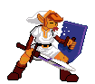
Link fait un saut gigantesque. Il peut ressauter normalement lorsqu'il est en l'air. Le Giga saut ne peut être effectué qu'au sol.
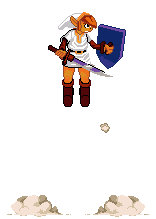
Si Link sort de l'écran, un curseur bleu en haut de l'écran indique sa position. Si la caméra suit Link et que l'adversaire n'est plus visible à l'écran, un curseur rouge en bas de l'écran indique sa position.
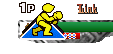
Link donne deux coups de pieds rapides à son adversaire.
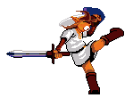
Link donne plusieurs coups d'épée extrêmement rapides.
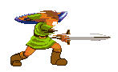
 juste avant de
se faire frapper pour parer les coups qui se bloquent en garde haute ;
juste avant de
se faire frapper pour parer les coups qui se bloquent en garde haute ;
 pour parer les
coups qui se bloquent en garde basse. Cette technique permet de ne pas subir
les dégâts de garde et laisse l'adversaire vulnérable à une contre-attaque
immédiate.
pour parer les
coups qui se bloquent en garde basse. Cette technique permet de ne pas subir
les dégâts de garde et laisse l'adversaire vulnérable à une contre-attaque
immédiate.
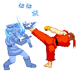
Quand Link est à terre, pour qu'il se relève en roulé vers l'avant ou l'arrière.
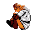
A côté d'un ennemi à terre. Link plante son épée dans l'adversaire au sol.
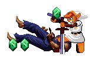
Ce n'est pas franchement une aptitude, mais on ne savait pas où le mettre ailleurs... Il suffit de se prendre suffisamment de coups dans un laps de temps donné pour y avoir droit... Notez que même si vous bloquez les coups, vous pouvez être mis KO !
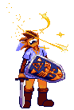
Si les options de personnalisation le permettent, à chaque fois que vous touchez votre adversaire, il libère des rupees ou un item. Vous devez marcher dessus lorsqu'ils sont à terre pour pouvoir les ramasser. Selon le nombre de coups enchaînés que vous réalisez, la couleur et la valeur des rupees changent. Voir la section "les rupees" pour en savoir plus... Quant aux items, voyez la section "Les items" pour plus de détails.
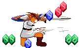
Inspirée bien sûr de la prise de KFM, d'où son nom. Link attrape son adversaire et le projette par-dessus lui.
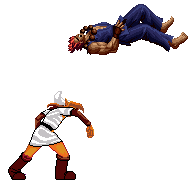
Link attrape son adversaire, lui plante son épée dans le ventre et l'envoie valser avec une planchette japonaise.
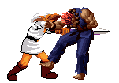
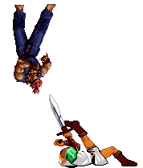
Link plante son épée dans son adversaire et retombe avec lui au sol ; l'adversaire rebondit, alors que Link fait une roulade arrière avant de se relever.
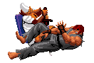
Le jeu se met en pause, et un menu descend du haut de
l'écran pour afficher les objets qui sont ou non en votre possession. Utile
pour savoir ce que vous avez lorsque vous avez choisi des objets au hasard.
Pour fermer le menu, appuyez sur n'importe quelle touche (sauf
 ).
Les informations de Link sont désactivées pendant l'affichage de ce menu
(mais pas les informations des autres Link éventuellement présents à
l'écran).
).
Les informations de Link sont désactivées pendant l'affichage de ce menu
(mais pas les informations des autres Link éventuellement présents à
l'écran).
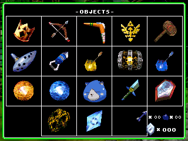
~~~~~~~~~~~~~~~~~~